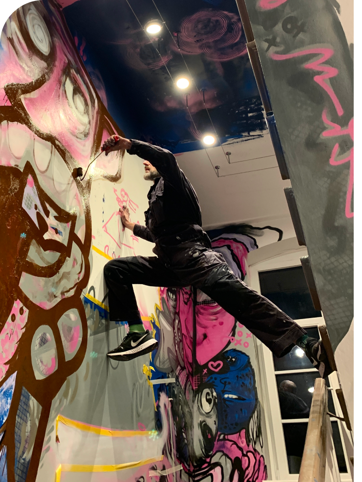

"It started with a blank canvas and a pair of worn-out shoes."

"It started with a blank canvas and a pair of worn-out shoes."
The making.



EVERY STROKE DELIBERATE.
Join Mail Club and receive original artwork monthly.
Get yours — join Mail Club